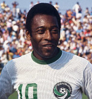

O futebol
Surgimento
Não se sabe precisamente seu surgimento. Mas historiadores contam que os ingleses chutavam um couro simbolizando a cabeça de um membro do exercito dinamarques, para comemorar a expulsão dos dinamarqueses, no entanto, esses jogos não tinham regras e foi proibido pelo Rei Eduardo II, no entando, em 1681 os jogos retornaram na Inglterra
Entre os anos de 1810-1840 o futebol popularizava pelas crianças de escola pública, no entanto, considerado uma atividade violenta e inadequada para os jovens.
Com o surgimento das regas do futebol, criadas pelo Colégio Harrow, que estabelecia um número de 11 jogadores por time e onde deveria ser feito os gols. Com essa iniciativa, as outras escolas decidiram se reunir criar regras comuns e assim o futebol passando a ser uma atividade educativa, e ao longo das decadas as regras foram se adaptando até chegar o que é atualmente
Surgimento do futebol no Brasil
O futebol chegou ao Brasil em 1894. Charles Miller, um jovem filho de ingleses que chegou a São Paulo, trouxe consigo bolas e regras para a prática do futebol no país. O primeiro clube a praticar o esporte foi Paulo Athletic Club, formado por colonos ingleses.
Com o crescimento do futebol, o remo, que era o esporte mais praticado naquela época, estava sendo substituído pelo futebol, assim, ficando em segundo lugar como esporte mais praticado no país.
Com isso, algumas equipes de remo tornaram-se clubes de futebol, como o Flamengo, Vasco da Gama e Botafogo.
Futebol Feminino
A primeira partida do futebol feminino datada aconteceu em 1989, confronto entre Inglaterra e Escócia em Londres. No Brasil não se sabe quando começou o futebol feminino, pois as partidas eram mistas, no entando, o futebol feminino enfrentou e enfrente muitas dificuldades no brasil, em 1921 foi realizada a primeira partida de futebol feminino no Brasil e assim chamando a atenção de públicos, pois o futebol era um esporte bruto e considerado impróprio para as mulheres.
Em 1964, com a ditadura, foi proibido de mulheres brasileiras jogarem futebol, o que atrapalhou o desenvolvimento do futebol feminino, permanecendo assim por 15 anos, e em 1979 foi revogado e assim o futebol feminino começou a se evoluir.
A seleção brasileira, é considerada uma das melhores do mundo, em 2007 se destacou bastante na copa do mundo conseguindo o segundo lugar e na America do Sul é a melhor seleção com 7 titulos na Copa America e em 2004 e 2008 se detacaram bastante e ficaram em segundo lugar.
Apesar da Seleção feminina não ter ganho nenhuma copa do mundo, tem a melhor jogadora de todos os tempo, Marta Vieira da Silva, seis vezes eleite a melhor do mundo pela FIFA, nenhum jogador homem ou mulher conseguiu esse feito. Marta é a maior artilheira entre homens e mulheres com 103 gols com a camisa do Brasil e 17 gols na Copa do Mundo sendo assim a maior artilheira da história das Copas do Mundo de Futebol.
Principais jogadores(as) do Brasil
 Fez 95 gols em 114 jogos com a camisa do Brasil e foi tricampeão pela seleção brasileira na copa do mundo.